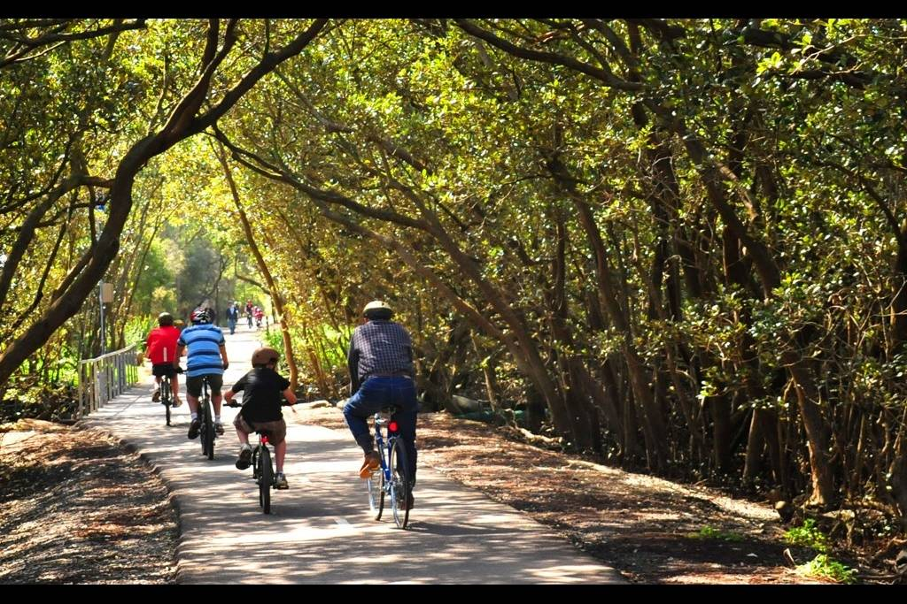

Recreational Rides In the Suburb Is So Much Fun
Using Giant Agressor XS is a treat for the recreational rider. You can take it around the suburb or take it to a mountain trail for a spin.Biking for recreation is fun. Find a park, go on to cycling trails or move around your suburb,
it is a healthy social activity.It keeps you physically fit and also has a positive impact on
mental health.